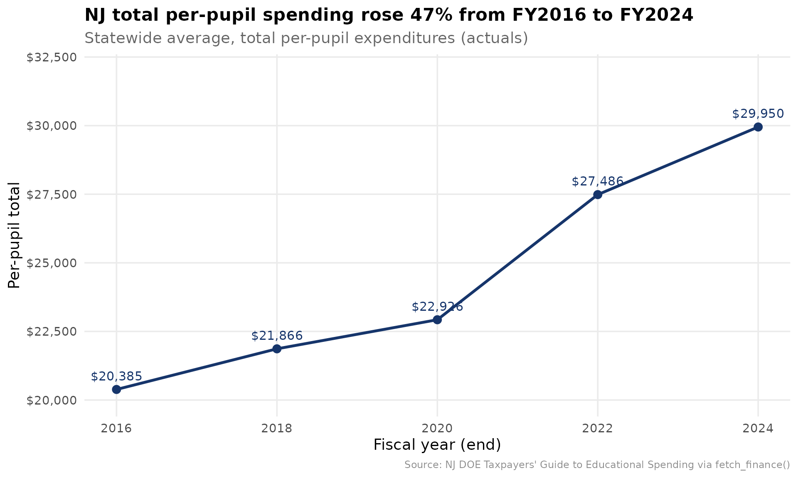
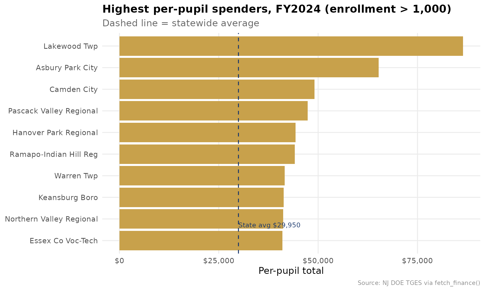
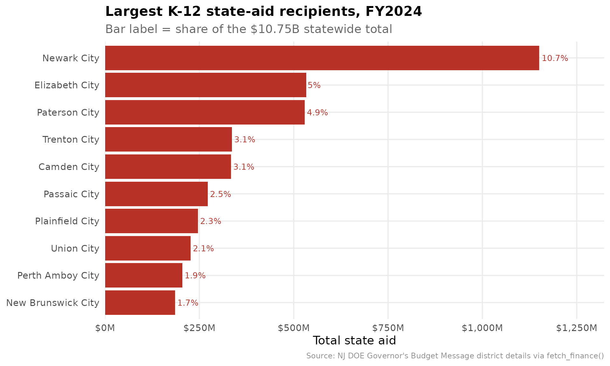

library(njschooldata)
library(ggplot2)
library(dplyr)
library(tidyr)
library(scales)
options(timeout = max(600, getOption("timeout")))
theme_nj <- function() {
theme_minimal(base_size = 14) +
theme(
plot.title = element_text(face = "bold", size = 16),
plot.subtitle = element_text(color = "gray40"),
plot.caption = element_text(color = "gray55", size = 9),
panel.grid.minor = element_blank(),
legend.position = "bottom"
)
}
nj_navy <- "#16356B"
nj_gold <- "#C8A14B"
nj_red <- "#B83227"fetch_finance() is the uniform, cross-state finance
front door for New Jersey. It consolidates the two NJ DOE finance
sources this package already pulls — the Taxpayers’ Guide to
Educational Spending (per-pupil spending) and the Governor’s Budget
Message district details (K-12 state aid) — onto one tidy schema with a
standard metric vocabulary, so the same analysis code runs
unchanged across states.
end_year is the fiscal/school year END:
end_year = 2024 is FY2024, school year 2023-24. Every value
traces to a downloaded NJ DOE file; the federal NCES identifier
(nces_dist) is attached as a join key only.
# the spending side is published a year in arrears, so even years 2016-2024
# give a clean statewide actuals series; 2024 is the latest full cross-section.
fin_multi <- fetch_finance_multi(c(2016, 2018, 2020, 2022, 2024))
fin_2024 <- fetch_finance(2024)Story 1: New Jersey per-pupil spending climbed 47% in eight years
Statewide total per-pupil expenditures rose from $20,385 in FY2016 to $29,950 in FY2024 — an eight-year jump of nearly half, well ahead of general inflation over the same window.
state_trend <- fin_multi %>%
filter(is_state, metric == "per_pupil_total") %>%
arrange(end_year) %>%
select(end_year, value)
state_trend %>%
mutate(pct_change_since_2016 = round((value / value[1] - 1) * 100, 1))
#> # A tibble: 5 × 3
#> end_year value pct_change_since_2016
#> <int> <dbl> <dbl>
#> 1 2016 20385 0
#> 2 2018 21866 7.3
#> 3 2020 22926 12.5
#> 4 2022 27486 34.8
#> 5 2024 29950 46.9
stopifnot(nrow(state_trend) > 0)
ggplot(state_trend, aes(end_year, value)) +
geom_line(color = nj_navy, linewidth = 1.2) +
geom_point(color = nj_navy, size = 3) +
geom_text(aes(label = dollar(value)), vjust = -1, size = 4, color = nj_navy) +
scale_y_continuous(labels = dollar, limits = c(20000, 32000)) +
scale_x_continuous(breaks = state_trend$end_year) +
labs(
title = "NJ total per-pupil spending rose 47% from FY2016 to FY2024",
subtitle = "Statewide average, total per-pupil expenditures (actuals)",
x = "Fiscal year (end)", y = "Per-pupil total",
caption = "Source: NJ DOE Taxpayers' Guide to Educational Spending via fetch_finance()"
) +
theme_nj()
Story 2: Per-pupil spending varies enormously — Lakewood is the extreme
Within a single year, district per-pupil spending spans a huge range. Lakewood Township reports $86,480 per pupil in FY2024 — nearly three times the statewide average — a figure driven by the district’s large nonpublic-school transportation and special-education obligations, which run through the public district budget.
top_spenders <- fin_2024 %>%
filter(is_district, metric == "per_pupil_total",
enrollment_denominator > 1000) %>%
arrange(desc(value)) %>%
select(entity_name, county, value, enrollment_denominator) %>%
head(10)
top_spenders
#> # A tibble: 10 × 4
#> entity_name county value enrollment_denominator
#> <chr> <chr> <dbl> <dbl>
#> 1 Lakewood Twp Ocean 86480 4720
#> 2 Asbury Park City Monmouth 65256 1504
#> 3 Camden City Camden 49091 7116
#> 4 Pascack Valley Regional Bergen 47383 1736
#> 5 Hanover Park Regional Morris 44313 1299
#> 6 Ramapo-Indian Hill Reg Bergen 44094 1919
#> 7 Warren Twp Somerset 41615 1666
#> 8 Keansburg Boro Monmouth 41342 1551
#> 9 Northern Valley Regional Bergen 41226 2156
#> 10 Essex Co Voc-Tech Essex 40987 2061
stopifnot(nrow(top_spenders) > 0)
state_pp <- fin_2024 %>%
filter(is_state, metric == "per_pupil_total") %>%
pull(value)
ggplot(top_spenders, aes(reorder(entity_name, value), value)) +
geom_col(fill = nj_gold) +
geom_hline(yintercept = state_pp, linetype = "dashed", color = nj_navy) +
annotate("text", x = 1.5, y = state_pp,
label = paste0("State avg ", dollar(state_pp)),
hjust = 0, vjust = -0.5, color = nj_navy, size = 3.5) +
coord_flip() +
scale_y_continuous(labels = dollar) +
labs(
title = "Highest per-pupil spenders, FY2024 (enrollment > 1,000)",
subtitle = "Dashed line = statewide average",
x = NULL, y = "Per-pupil total",
caption = "Source: NJ DOE TGES via fetch_finance()"
) +
theme_nj()
Story 3: State aid is concentrated in the former Abbott cities
Of $10.75 billion in total K-12 state aid in FY2024, the four largest recipients — Newark, Elizabeth, Paterson, and Trenton, all former Abbott districts — absorb a strikingly large share. Newark alone receives nearly $1.15 billion, about 10.7% of all state aid in New Jersey.
state_total_aid <- fin_2024 %>%
filter(is_state, metric == "revenue_state") %>%
pull(value)
top_aid <- fin_2024 %>%
filter(is_district, metric == "revenue_state") %>%
arrange(desc(value)) %>%
mutate(share_of_state = round(value / state_total_aid * 100, 1)) %>%
select(entity_name, value, share_of_state) %>%
head(10)
top_aid
#> # A tibble: 10 × 3
#> entity_name value share_of_state
#> <chr> <dbl> <dbl>
#> 1 Newark City 1149975941 10.7
#> 2 Elizabeth City 532961132 5
#> 3 Paterson City 529272462 4.9
#> 4 Trenton City 336330541 3.1
#> 5 Camden City 333950970 3.1
#> 6 Passaic City 272108020 2.5
#> 7 Plainfield City 246081549 2.3
#> 8 Union City 226682966 2.1
#> 9 Perth Amboy City 204876489 1.9
#> 10 New Brunswick City 185885120 1.7
stopifnot(nrow(top_aid) > 0)
ggplot(top_aid, aes(reorder(entity_name, value), value)) +
geom_col(fill = nj_red) +
geom_text(aes(label = paste0(share_of_state, "%")),
hjust = -0.1, size = 3.5, color = nj_red) +
coord_flip() +
scale_y_continuous(labels = label_dollar(scale = 1e-6, suffix = "M"),
expand = expansion(mult = c(0, 0.15))) +
labs(
title = "Largest K-12 state-aid recipients, FY2024",
subtitle = "Bar label = share of the $10.75B statewide total",
x = NULL, y = "Total state aid",
caption = "Source: NJ DOE Governor's Budget Message district details via fetch_finance()"
) +
theme_nj()
The canonical schema
Every row is one end_year × entity ×
metric. The standard cross-state metrics
(per_pupil_total, per_pupil_instruction,
revenue_state) sit alongside NJ-specific per-pupil category
metrics, and each row carries the federal nces_dist join
key.
fin_2024 %>%
filter(state_id == "3570") %>%
select(end_year, entity_name, metric, value, is_per_pupil,
enrollment_denominator, nces_dist)
#> # A tibble: 7 × 7
#> end_year entity_name metric value is_per_pupil enrollment_denominator
#> <int> <chr> <chr> <dbl> <lgl> <dbl>
#> 1 2024 Newark City per_pupil_to… 3.44e4 TRUE 43251
#> 2 2024 Newark City per_pupil_in… 1.06e4 TRUE NA
#> 3 2024 Newark City per_pupil_su… 4.24e3 TRUE NA
#> 4 2024 Newark City per_pupil_ad… 1.92e3 TRUE NA
#> 5 2024 Newark City per_pupil_op… 3.90e3 TRUE NA
#> 6 2024 Newark City per_pupil_fo… NA TRUE NA
#> 7 2024 Newark City revenue_state 1.15e9 FALSE NA
#> # ℹ 1 more variable: nces_dist <chr>
sessionInfo()
#> R version 4.6.1 (2026-06-24)
#> Platform: x86_64-pc-linux-gnu
#> Running under: Ubuntu 24.04.4 LTS
#>
#> Matrix products: default
#> BLAS: /usr/lib/x86_64-linux-gnu/openblas-pthread/libblas.so.3
#> LAPACK: /usr/lib/x86_64-linux-gnu/openblas-pthread/libopenblasp-r0.3.26.so; LAPACK version 3.12.0
#>
#> locale:
#> [1] LC_CTYPE=C.UTF-8 LC_NUMERIC=C LC_TIME=C.UTF-8
#> [4] LC_COLLATE=C.UTF-8 LC_MONETARY=C.UTF-8 LC_MESSAGES=C.UTF-8
#> [7] LC_PAPER=C.UTF-8 LC_NAME=C LC_ADDRESS=C
#> [10] LC_TELEPHONE=C LC_MEASUREMENT=C.UTF-8 LC_IDENTIFICATION=C
#>
#> time zone: UTC
#> tzcode source: system (glibc)
#>
#> attached base packages:
#> [1] stats graphics grDevices utils datasets methods base
#>
#> other attached packages:
#> [1] scales_1.4.0 tidyr_1.3.2 dplyr_1.2.1
#> [4] ggplot2_4.0.3 njschooldata_0.9.25
#>
#> loaded via a namespace (and not attached):
#> [1] utf8_1.2.6 sass_0.4.10 generics_0.1.4 stringi_1.8.7
#> [5] hms_1.1.4 digest_0.6.39 magrittr_2.0.5 evaluate_1.0.5
#> [9] grid_4.6.1 timechange_0.4.0 RColorBrewer_1.1-3 fastmap_1.2.0
#> [13] cellranger_1.1.0 jsonlite_2.0.0 purrr_1.2.2 codetools_0.2-20
#> [17] textshaping_1.0.5 jquerylib_0.1.4 cli_3.6.6 crayon_1.5.3
#> [21] rlang_1.2.0 bit64_4.8.2 withr_3.0.3 cachem_1.1.0
#> [25] yaml_2.3.12 otel_0.2.0 parallel_4.6.1 downloader_0.4.1
#> [29] tools_4.6.1 tzdb_0.5.0 vctrs_0.7.3 R6_2.6.1
#> [33] lifecycle_1.0.5 lubridate_1.9.5 snakecase_0.11.1 stringr_1.6.0
#> [37] bit_4.6.0 fs_2.1.0 vroom_1.7.1 ragg_1.5.2
#> [41] janitor_2.2.1 pkgconfig_2.0.3 desc_1.4.3 pkgdown_2.2.0
#> [45] pillar_1.11.1 bslib_0.11.0 gtable_0.3.6 glue_1.8.1
#> [49] systemfonts_1.3.2 xfun_0.59 tibble_3.3.1 tidyselect_1.2.1
#> [53] knitr_1.51 farver_2.1.2 htmltools_0.5.9 labeling_0.4.3
#> [57] rmarkdown_2.31 readr_2.2.0 compiler_4.6.1 S7_0.2.2
#> [61] readxl_1.5.0